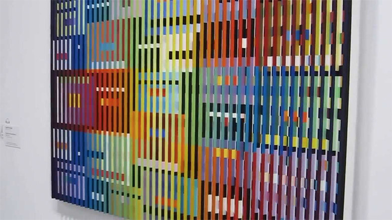

idea

Yaacov Agam
https://www.youtube.com/watch?v=megNvu6HHMg-どんな人
動いてみえるような作品をつくるキネティックアーティストの1人。鑑賞者の視点によって画面が変化していくような作品を作っていました
-解説
視点によって画面の模様が変わる作品です。構造はいたって単純で、凹凸の面によって塗っている模様を変えています。
-好きなところ
構造は単純でも視点によって色が徐々に変化していく様子は、みていて面白いです。